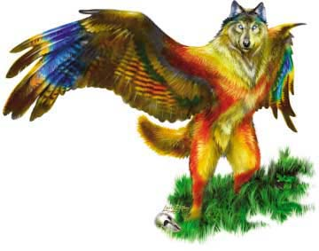

大型魔法兽

| 生命骰： | 3d10+12 (28 hp) |
| 先攻： | +4 |
| 速度： | 30 英尺，飞行 60 英尺（普通） |
| 防御等级： | 15 (+3 敏捷，+2 天生)，接触 13，措手不及 12 |
| 基本攻击／擒抱： | +3/+13 |
| 攻击： | 啮咬 +8 近战 |
| 全力攻击： | 啮咬 +8 近战，或 2 爪抓 +8 近战 |
| 伤害： | 啮咬 1d8+9，爪抓 1d6+6 |
| 面宽／触及： | 10 英尺./10 英尺. |
| 特殊攻击： | 撕裂 2d6+6，破邪斩，类法术能力 |
| 特殊能力： | 黑暗视觉 60 英尺，昏暗视觉，灵敏嗅觉 |
| 豁免： | 强韧 +7，反射 +6，意志 +2 |
| 属性： | 力量 22，敏捷 16，体质 19，智力 9，感知 13，魅力 16 |
| 技能： | 躲藏 +0，聆听 +2，潜行 +4，察言观色 +2，侦查 +2 |
| 专长： | 飞越，精通先攻 |
| 地域： | 任何山脉和森林 |
| 组织： | 单独、编队（2�C5），或集群（11�C20） |
| 挑战等级： | 3 |
| 宝物： | ― |
| 阵营： | 总是守序善良 |
| 进化： | 4�C6 HD（大型）；7�C9 HD（超大型） |
塞穆鲁（Senmurvs）是智慧生物，是善良的凶猛守护者。它们通常为诸如精灵、矮人和侏儒等非邪恶类人生物充当坐骑、侦察兵和守卫。
塞穆鲁拥有狗的头、身体和带爪的后爪，但取代狗的前爪位置的是两只有羽毛的翅膀。它们色彩鲜艳，且没有两只的图案是相同的。塞穆鲁的眼睛呈宝石色，通常是蓝宝石蓝、红宝石红或绿宝石绿，并且没有瞳孔。
已知塞穆鲁会向身处困境的类人生物提供援助，特别是那些正遭受邪恶生物攻击的类人生物。塞穆鲁能够感知善良与邪恶，因此它们对帮助对象非常挑剔，如果发现所协助对象中有欺骗或背叛行为，它们会变得暴怒。
塞穆鲁使用木族语（Sylvan），并能听懂但不能说通用语（Common）。
塞穆鲁擅长俯冲进入战斗进行致命打击，然后撤退到安全地带。它们通常会在接近进行近战之前先数次扫掠攻击对手。当它们进入近战时，会用双爪抓住目标并进行撕裂，造成可怕的伤害。
一只塞穆鲁能驮载一名骑手和不超过 200 磅重的装备。塞穆鲁不太能忍受马鞍，因此骑手必须学会不用马鞍骑乘。
撕裂 (Rend)(Ex)：如果塞穆鲁用双爪同时击中同一个目标，它会抓住对手的身体并撕下血肉。此攻击造成 2d6+6 点伤害。
破邪斩(Smite Evil)(Su)：每日一次，塞穆鲁可以发动一次普通攻击，对一名邪恶敌人造成等同于其生命骰总数（最大额外伤害为+20）的额外伤害。
类法术能力 (Spell-Like Abilities)：随意施展――侦测善良（detect good），侦测邪恶（detect evil）。
灵敏嗅觉(Scent)(Ex)：塞穆鲁能侦测临近的敌人，嗅出隐藏的敌人，并能通过嗅觉进行追踪。